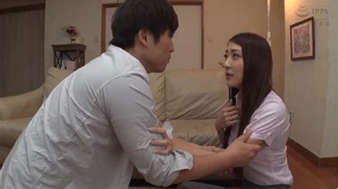

Hùng là con một trong gia đình khá giả ,cậu hiện đang học lớp 12 . Năm nay là năm cuối cấp và Hùng học hành không được khá lắm lên cô Nga mẹ Hùng lúc nào cũng phải nhắc nhở Hùng ,thậm chí có khi là cáu gắt khiến cho cậu cảm thấy ngộp thở và có cảm giác lúc nào mẹ cậu cũng la mắng cậu .
Hiện bố Hùng đang công tác ở nước ngoài 3 tháng nay mà cô Nga mẹ Hùng hiên nay đang bước vào tuổi 36 , thời kì sung sức nhất của người phụ nữ trong lĩnh vực tình dục .
Chính vì vậy lúc nào cô Nga cũng có cảm giác thèm muốn được địt một trận tơi bời hoa lá , phải nói người cô Nga không phải vào loại đẹp nghiêng nước nghiêng thành nhưng cũng đủ để làm say đắm bao gã đàn ông chơi bời . Cô Nga mang một vẻ đẹp đầy gợi cảm của một người phụ nữ một con , người ta thường nói “ gái một con trông mòn con mắt” quả không sai .

Hai cặp vú cô Nga đầy nhựa sống không quá săn chắc nhưng khá to và quyến rũ với hai núm thịt đỏ hồng nhìn đầy cảm hứng . Cô có một nét đẹp ẩn chứa bên trong , như một khu mỏ chưa được ai khai thác , như một lạch nước ngầm trong mát và ngọt lịm , hai gồ má có nét ửng hồng như một người con gái tuổi đôi mươi và sống mũi hơi cao tôn lên vẻ đẹp thanh tú .
Cùng với một làn da trắng như trứng gà bóc do cô chăm chút giữ gìn và cũng một phần vì cô hay ở nhà ít khi ra ngoài lên không tiếp xúc nhiều với nắng . Còn xét về vẻ đẹp ẩn sâu bên trong cô , nơi mà bao kẻ thèm muốn chính là đôi gò bồng đảo vun cao một cách mạnh mẽ , lúc nào cũng chỉ muốn tuôn ra những giọt nước ngọt ngào thơm thơm như mùi sầu riêng vậy .
Lồn cô Nga sạch bong không có một sợi lông nào , một phần vì cô để ý chăm chút và một phần vì cô cũng dùng thuốc triệt lông lên mới được như vậy . Có lẽ lồn cô Nga khá đạt tiêu chuẩn chất lượng , mép lồn vun cao sờ rất sướng tay , lỗ lồn lại nhỏ hẹp siết lại rất tuyệt vời , đây đúng là sự mơ ước của nhiều người đàn ông .
Vợ đẹp , con ngoan , gia đình yên ấm , nhưng tiếc là bố Hùng lại không có diễm phúc được hưởng thụ , công việc buộc ông phải đi xa nhà lâu ngày , có khi đến gần một năm mới về được đến nhà một lần , mà mỗi lần về ở nhà cùng lắm chỉ được có dăm bữa nửa tháng rồi lại khăn gói lên đường .
Cô Nga ở nhà hầu như chả phải làm gì ngoài những việc vặt trong gia đình và chăm lo cho Hùng mọi việc như học hành , quần áo , hay cả những việc nhỏ nhặt như tắm giặt bà vẫn phải thường xuyên nhắc nhở Hùng .
Sự đời không phải việc gì cũng tuân theo ý mình , được cái này thì hỏng cái kia . Tuy chồng cô luôn đều đặn gửi tiền về cho gia đình nhưng lúc nào Nga cũng cảm thấy thiếu thốn nhất là về khoản giường chiếu , cô luôn luôn cảm thấy thèm khát , nhưng cô lại là một người con gái hiền lành , thậm chí có phần nhút nhát lên những chuyện tình ái lăng nhăng hay con cặc giả thì cô lại không dám nghĩ tới lên cô chỉ có thể một mình thủ dâm ở nhà thôi . Một mình ở nhà lên một ngày cô Nga phải thủ dâm đến cả chục lần mà chưa chán , khốn khổ thay , càng thủ dâm cô lại càng cảm thấy thèm muốn một cách mãnh liệt . Và điều gì phải đến thì cũng sẽ đến , một hôm Hùng được nghỉ học sớm hai tiết cuối , đột nhiên cậu nẩy ra ý tưởng muốn xem xem mẹ mình ở nhà một mình sẽ làm gì .
Trèo qua cánh cổng sắt và nhẹ nhàng đi đến bên cửa sổ phòng cô Nga , Hùng nhẹ nhành mở cánh cửa sổ ra và một cảnh tượng thần tiên hiện ra trước mắt khiến cậu ngẩn ngơ đến chóng mặt .
Cô Nga mẹ Hùng đang nằm dài trên chiếc ghế xếp , một tay xoa xoa trên ngực , một tay thì đang luồn xuống bên dưới quần và nhấp nhấp một cách nhịp nhàng . Mắt cô Nga đang dán váo chiếc ti vi đang hiện lên cảnh một đôi nam nữ người Tây đang địt nhau một cách mãnh liệt .
Hùng ngay lập tức nhận ra đây là chiếc đĩa của mình để trong ngăn kéo tủ mà cậu đã để rất kín đáo . Dường như sự nóng bức làm cho Nga cảm thấy khó chịu và làm tăng thêm cảm giác thèm muốn của cô , cô liền đứng dậy và cởi hết quần áo trên người mình ra .
Từng đường nét hoàn mĩ của cô Nga đập vào mắt của Hùng , cặp vú căng to tròn đến cái lồn đen đen sâu thăm thẳm như đang mời gọi Hùng , làm da trắng đẹp như tranh khiến cho Hùng cảm thấy bứt dứt đầy khó chịu trong người . Theo quán tính , tay của Hùng nhè nhẹ luồn xuống bên dưới bóp bóp con cặc đang căng cứng từ lúc nào .
Phía bên trong , Nga cũng luồn tay xuống bên dưới và nhấp nhanh như vũ bảo , chả mấy chốc người cô Nga giật giật lên mấy cái và dâm thủy từ bên trong ứa ra xối xả , nhưng có lẽ đó mới chỉ là màn mở đầu , cô Nga đứng dậy mở tủ lạnh và lấy ra một quả dưa chuột to cỡ bằng ba ngón tay chụm lại và lừa lựa đút vào bên trong lồn mình , phía bên ngoài Hùng cũng xóc một cách vội vã , con cặc của Hùng phải nói là khá to , nếu không muốn nói là vĩ đại , đút vào lồn thì phải nói là sướng lên tiên luôn , nó phải to bằng hai phần ba bắp tay của một người khỏe mạnh . Vừa xóc Hùng vừa nhìn như muốn nuốt chửng mẹ mình , được khoảng năm phút , con cặc của Hùng giật giật lên mấy phát rồi bắn ra từng hàng tinh khí vào tường .
Bên trong mẹ Hùng , cô Nga vẫn đang thủ dâm cùng quả dưa chuột , lần này là lần thứ hai lên cô ra hơi lâu một chút . Bỗng nhiên Hùng nảy ra một ý định táo bạo và bất ngờ , bỏ mặc những hình ảnh dâm dục đang mời gọi trước mắt , Hùng len lén vào nhà và bước lên phòng .
Rút trong cặp ra là một chiếc quần mà cậu mới mua khi đi qua chợ , Hùng liền thay quần mới vào và mặc một chiếc áo mới mượn hôm qua của thằng bạn thân . Sau khi thay xong quần áo cậu liền lấy một tấm vải đen xé ra từ một chiếc áo của mình bịt mặt cẩn thận như một kẻ trộm .
Nhìn vào gương thấy mình như một người khác , cậu yên tâm xuống dưới nhà và không quên mang theo một cái khẩu trang rồi nhẹ nhàng đi vào phòng mẹ cậu . Vừa thấy cô Nga mẹ mình lúc này đang cầm một quả dưa chuột trên tay thủ dâm một mình cậu liền lao vào từ sau lưng bịt mồm mẹ mình và đè cô nằm xấp xuống sàn . Bị bất ngờ cô Nga chỉ ú ớ được mấy câu thì đã bị Hùng đè lên người .
Bằng một thế võ Judo , cậu khóa người mẹ mình lại và vớ lấy một tấm giẻ gần đó buộc mồm bà lại cho bà đỡ kêu . Hai tay đã được tự do , với sức khỏe của một chàng trai tuổi chưởng thành , cậu trói hai tay mẹ mình lại sau lưng và bịt luôn hai mắt cô lại . Hai tay đã bị trói , mắt bị bịt kín lên cô Nga hòan toàn bất lực trước chàng thanh niên khỏe mạnh .
Cô chỉ biết ú ớ lên mấy tiếng khi bàn tay Hùng chạm vào cái lồn đang ướt nhẹp của cô , lúc này cô Nga hoàn toàn không mặc gì cả , cô cảm thấy như bị điện giật khi có người khác chạm vào lồn mình mà mình hoàn toàn không hay biết . Lúc này yên tâm là mẹ mình không thể nhìn thấy để biết mình là ai , Hùng liền ra ngoài khóa cửa cho yên tâm rồi quay trở lại bên trong .
Từ từ và chậm dãi , Hùng lần lượt xoa bóp nhẹ cặp vú đang căng cứng của cô Nga và bắt đầu cởi quần áo . Kế hoạch đã thành công mĩ mãn , giờ đây cái lồn của cô Nga đã là của Hùng , Hùng vòng tay ôm lấy Nga xoa lấy xoa để cặp vú mẹ mình rồi đột nhiên véo mạnh một cái làm cô Nga đau muốn hét lên .
Hùng liền bế xốc cô Nga lên trên phòng karaoke của gia đình và cởi tấm giẻ bịt mồm cho cô Nga lúc này cô mới hét lên thậm tệ
-Anh là ai vậy ! Tại sao lại vào phòng tôi !
Cô vừa nói được đến đó thì Hùng đã thò tay xuống bên dưới lồn cô Nga và véo mạnh một cái
-Ahhhh……đau quá , anh làm cái gì vậy ! Tôi sẽ báo cảnh sát !
Hùng liền lựa thế và đâm một cú lút cán vào trong lồn Nga
-Á á á á á …..ah ah ah
Con cặc của Hùng vốn to hơn bình thường , lại còn dài đến hơn 20 cm mà Hùng nhấp một cú mạnh như vậy thì cảm giác thật khó tả . Cô Nga hai mắt như trợn lên sau tấm khăn bịt mặt , cảm giác thật sốc và như muốn ngộp thở . Cô lại rên lên một tiếng như muốn xua tan đi nhục dục đang dâng trào trong lồn mình , mồm cô há hốc ra kinh ngạc
– Aaaaaa……aaaaaaaaaa………aaaaaaaaaaaaa
Dừng lại một lúc cho cảm giác sung sướng lắng xuống Hùng bắt đầu nhấp liên tục vào trong lồn của Nga , lúc này không thấy cô Nga phản đối nữa mà chỉ còn thấy những tiếng rên la đến thất thanh của cô . Hùng quả thật đã tính toán kĩ khi làm việc này , đây là phòng karaoke của gia đình lên được cách âm với bên ngoài , dù cô Nga có la hét đến thế nào đi chăng nữa cũng chả có ai nghe thấy . Lúc này Hùng đã đè cô Nga ra và địt theo kiểu chó . Hùng hai tay vừa xoa bóp hai bầu vú của cô Nga vừa địt một cách dữ dội . Bỗng nhiên dường như sự sĩ diện của cô Nga trỗi dậy , cô lấy chân đạp một cú thật mạnh vào bụng Hùng khiến cậu đau đớn , tức mình vì bị đánh , Hùng nhớ lại những lần mẹ mình đã chửi mắng mình thậm tệ Hùng nghĩ đây là dịp tốt để tra thù mẹ liền mặc cho bà la hét Hùng trói hai chân bà vào với nhau và đét một cú mạnh mẽ vào mông đít của cô Nga , cô Nga ré lên đau đớn và Hùng thì tiếp tục địt cô mạnh mẽ , vừa địt Hùng vừa vỗ mạnh vào mông mẹ mình làm cho cô phải bật khóc . Dừng lại một lúc rồi bất ngờ Hùng địt như vũ bão vào trong lồn cô Nga vừa địt tay vừa vỗ mạnh vào mông cô Nga khiến cho cô có cảm giác vừa sướng vừa thấy đau đớn. Một cảm giác lạ lùng khiến cô Nga cảm thấy cực kì phấn khích , dường như sự hành hạ lại mang đến niềm khoái cảm mãnh liệt cho cô , cô hưởng ứng những cú nhấp của Hùng bằng cách đẩy mông về phía sau khiến cho con cặc của Hùng được đút vào sâu bên trong lồn cô hơn . Vừa địt cô Nga vừa rên lên đầy khoái cảm
-A…ah ah ah….sướng quá …..sướng quá …..oh oh oh oh …á á á á á
Người cô Nga run lên rồi giật giật lên mấy phát , trong lồn cô , dâm thuỷ trào ra ào ạt , lồn cô bóp chặt con cặc của Hùng khiến cho cậu cảm thấy cực kì hưng phấn . Nghỉ một lúc Hùng buộc lại hai tay cô Nga vào với chân , cho mông đít cô Nga chổng lên trời , từ trên Hùng quì xuống và lại tiếp tục địt như vũ bão vào lồn cô Nga , không cho cô Nga có thời gian thở lấy sức , cũng chẳng bao lâu , Hùng cũng giật giật lên mấy cái và phóng ồ ạt từng đợt tinh trùng vào trong lồn cô Nga
Chưa hết , Hùng lấy trong cặp ra một con cặc giả không biết cậu thửa ở đâu ra . Tiến đến bên cô Nga , Hùng vỗ mạnh một cái vào mông cô Nga làm cô lại hét lên ” Á ” một tiếng thích thú . Nhanh tay Hùng đút con cặc giả vào trong lồn cô Nga và mở hết cỡ ,cô Nga há hốc miệng vì sướng trong khi Hùng lại hành hạ cô Nga đủ kiểu hết bẹo vú vỗ mông rồi thậm chí vật buồi vào mặt cô Nga rồi đút luôn con cặc của mình vào mồm cô. Chỉ thấy cô Nga ú ớ phản đối trong khi con cặc của Hùng đã đút nút cán trong miệng cô . Vì con cặc của Hùng khá to lên khiến cô Nga như muốn ngộp thở trong khi Hùng tiếp tục địt một cách tàn bạo trong mồm cô Nga mặc cho nước mắt nước mũi cô dàn dụa . Vừa bị địt vào mồm , vừa bị con cặc giả ngoáy hết số dưới lồn , mà cô Nga hai tay lại bị trói trặt lên cô chỉ còn biết gồng mình chịu đựng . Hùng vừa địt vừa nắm tóc cô Nga dúi vào buồi mình, độ chừng mười phút Hùng rút con cặc ra khỏi mồn cô Nga xóc xóc thêm mấy cái rồi lại phóng từng đợt tinh trùng đầy mặt cô Nga . Trong khi ở dưới cô Nga cũng lại tiếp tục giật giật lên mấy cái rồi cô gào lên
– Á á á á ….em … em ” ra” rồi anh ơi…. sướng quá đi mất
Nghe thấy mẹ mình nói thế Hùng liền rút con cặc giả ra và vục đầu vào lồn cô Nga mà liếm mút , lưỡi Hùng quét nhẹ trong lồn cô Nga , nuốt hết những dâm thuỷ của cô rồi đột nhiên cắn mạnh một phát vào hột le của cô Nga khiến cô giật bắn mình và khóc thét lên
Giờ đây Hùng mới thấy rằng mặc dù lúc nào mẹ cũng la mắng mình nhưng thật ra mẹ mình cũng rất yếu đuối như bao người phụ nữ khác , nhìn cô Nga khóc nức nở lên đột nhiên Hùng cảm thấy tội lỗi , Hùng cũng biết mình lên dừng lại ở đây , cậu liền buộc lại chân tay cô vào bốn góc giường và quyết định làm một cú chót . Thật nhẹ nhàng , Hùng ôm lấy cô Nga và đặt một nụ hôn lên môi cô Nga , rất chậm dãi và nhẹ nhàng , Hùng luồn hai tay sau cổ cô và vuốt nhè nhẹ lên đó , mọi hành động đều rất nhẹ nhàng trái ngược hẳn với những gì cậu đã làm nãy giờ . Tiếp theo Hùng liền cắn nhẹ tai cô Nga làm cô thấy cực kì kích thích , Hùng hôn lần lượt khắp mặt cô Nga rồi dùng lưỡi quệt nhẹ xuống hai bầu vú cô Nga và tiếp tục cắn nhẹ vào hai núm vú của cô trong khi tay thì vuốt nhè dọc sống lưng cô , sau khi bú cô Nga độ chừng hai ba phút , Hùng đưa lưỡi xuống liến vào phần bắp đùi của cô Nga và dần dần tiến sát vào bên trong lồn cô và liền nhè nhẹ bên ngoài làm cô Nga cảm thấy nứng lồn một cách ghê gớm . Có lẽ Hùng cũng đọc nhiều truyện lên cậu rất biết cách làm cho phụ nữ cảm thấy hứng thú , Hùng chỉ liếm nhè nhẹ bên ngoài như trêu ngươi cô Nga . Chỉ đến khi thấy cô Nga rên lên nhè nhẹ và nhịp nhịp mông đít một cách hứng thú thì Hùng mới úp mặt vào trong lồn cô Nga mà bú liếm trong đó , lưỡi Hùng liếm dọc bên trong lồn cô và đột nhiên Hùng cắn nhẹ lồn cô Nga một cái rồi nhay nhay những thớ thịt lồn đo đỏ của cô rồi lại cắn thêm một cái nữa vào hột le cô rồi dùng răng kéo nhẹ ra ngoài khiến cho lồn cô Nga co giật liên hồi và nước lồn bên trong tuôn ra ào ạt như suối trong khi miệng cô vẫn rên lên ư ứ đầy nhục dục . Không để xót một giọt dâm thuỷ đậm đặc nào , Hùng liếm sạch như rửa lồn cô Nga bằng lưỡi của mình . Thấy đã đủ Hùng liền nằm đè lên người cô Nga và nhẹ nhàng quệt buồi mình dọc khe lồn cô Nga như để trêu tức và kích thích nàng . Dường như không chịu được sự kích động và bức xúc , đến đây cô Nga liền lựa thế hẩy mông mình lên nhưng do con cặc của Hùng lớn lên cô mới chỉ đập được chim của mình vào cặc của Hùng thôi chứ chưa vào hẳn bên trong . Thấy vậy Hùng lựa thế cô Nga hẩy tiếp thêm phát nữa Hùng ấn một phát thật lực xuống dưới , con cặc Hùng to mà lại dài lên đút một phát nút cán khiến cho cô Nga như cởi bỏ được xiềng xích , một cảm giác sung sướng dâng trào bên trong lồn cô khiên cô rên lên một tiếng thất thanh
– Á… sướng quá đi mất….á á á á á á á á á á á á á á
Phải cố gắng lắm Hùng mới kiềm chế mình để không hét lên thành tiếng cùng với cô Nga . Sau cú nhấp đó Hùng tiếp tục nhấp liên hồi vào lồn cô Nga . Lồn cô Nga khá hẹp lên bót chặt con cặc của Hùng khiến cho cậu có cảm giác thực sự hưng phấn , với sức vóc của một chàng thanh niên 18 tuổi , Hùng địt cô Nga một cách quyết liệt mỗi cú địt của Hùng lại làm cô Nga rên lên sung sướng trong khi vẫn thở hồng hộc . Cô Nga lại tiếp tục rên lên khoái cảm
-Oh…oh…oh….ah ….ah ….ah
Cuối cùng cô Nga cũng giật giật người lên mấy cái và tiếp tục ” ra ” thêm một lần nữa trong khi đó con cặc của Hùng cũng giật giật lên liên hồi và phóng từng đợt tinh trùng vào bên trong lồn cô Nga , giữ im buồi mình một lúc trong lồn cô Nga cho cô khỏi cảm thấy trống trải rồi Hùng rút con cặc mình ra . Sau đó Hùng lấy con cặc giả ra nhét vào lồn cô Nga mở hết cỡ và mặc lại quần áo cho cô Nga rồi để mặc cô với cơn sướng còn đang ngây ngất bên trong rồi lên trên phòng ngủ của mình . Lấy từ trong ngăn kéo ra một viên thuốc nhỏ màu tím , cậu tán nhỏ ra như bột pha vào một cốc nước rồi đem xuống dưới nhà cho cô uống . Uống xong cốc nước đó cô Nga cảm thấy người mình như tê liệt không thể cử động được như bị bóng đè vậy . Hùng cởi trói cho cô Nga rồi bế cô lên giường hôn lên môi cô một nụ hôn tạm biệt và thay quần áo cũ của mình và cầm cặp ra ngoài như chưa hề có việc gì xảy ra . Câu chuyện này chỉ diễn ra một lần duy nhất và đó là một bí mật của Hùng mà chỉ mình cậu biết . Sau này Hùng đã đỗ Đại Học và rồi cậu cũng có vợ con tử tế còn câu chuyện hôm nào chỉ như một kỉ niệm đẹp mà Hùng giữ mãi trong lòng.
Hết